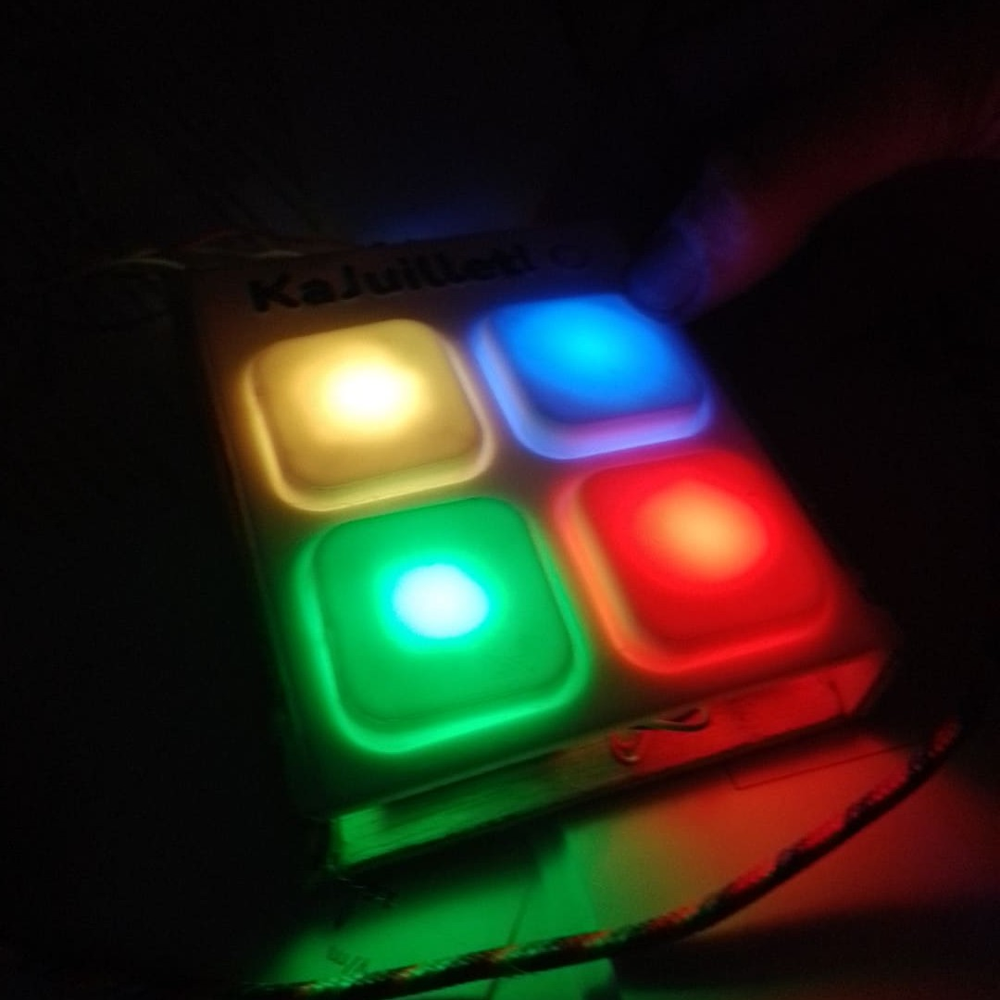
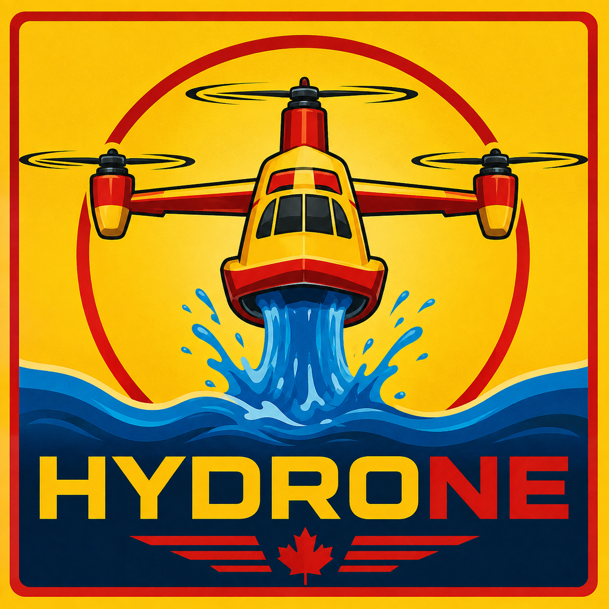
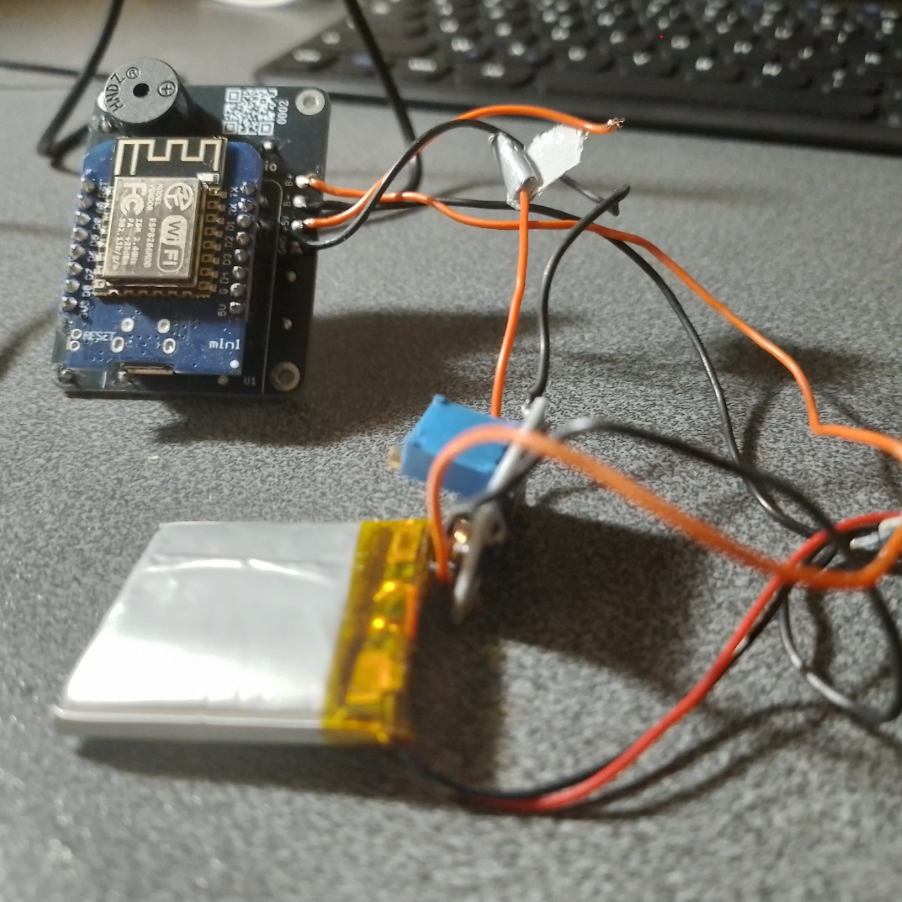
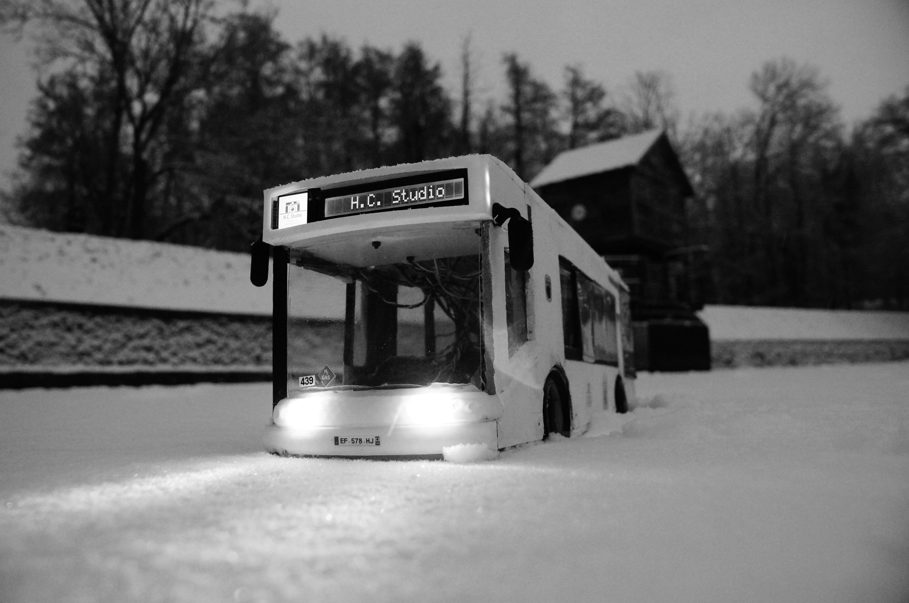

Passionné d’électronique, je conçois et réalise des projets innovants, du prototypage à la programmation d’objets connectés.

Je voulais faire un Kahoot pour ma fête d'anniversaire le 1er Juillet 2026, mais mon téléphone a des problèmes de tactile, donc j'ai recréé le jeu avec des bornes physique à 4 boutons lumineux, des quizzes généré par IA en quelques secondes sur le thème que l'on veut et jusqu'à 7 joueurs ! (Et vu que c'était un Kahoot! en Juillet, je l'ai appelé KaJuillet! 😁)
En savoir plusPour succéder au gros projet du Businova, je me suis lancé dans un gigantesque projet de drone radiocommandé à partir de 0. Des tonnes de choses pas encore expérimenté : objet flottant, volant et stabilisé, une télécommande radio faite aussi maison, des ailes rotatives pour passer d'un vol vertical à horizontal etc...
En savoir plus

Mon projet le plus récent, un objet connecté et compact, qui m'apprend la conception d'un produit électronique de A à Z, même si je n'ai aucune intention de le commercialiser. En effet, mon projet est un cas beaucoup trop spécifique. Cliquez sur le bouton pour tous les détails !
En savoir plusLe plus gros projet électronique accompli à ce jour : Reconstruire une maquette qui roule et avec du RGB, du bus que je prenais tous les matin en allant au collège. Construit en Bois, PLA (plastique), et avec des pièces métalliques, tout designé au plus fidèle possible de l'original. Ce projet est actuellement considéré comme achevé, mais il vit au quotidien, notamment en étant la mascotte de mon groupe de rock Crazy Bus, ou en voyage.
En savoir plus